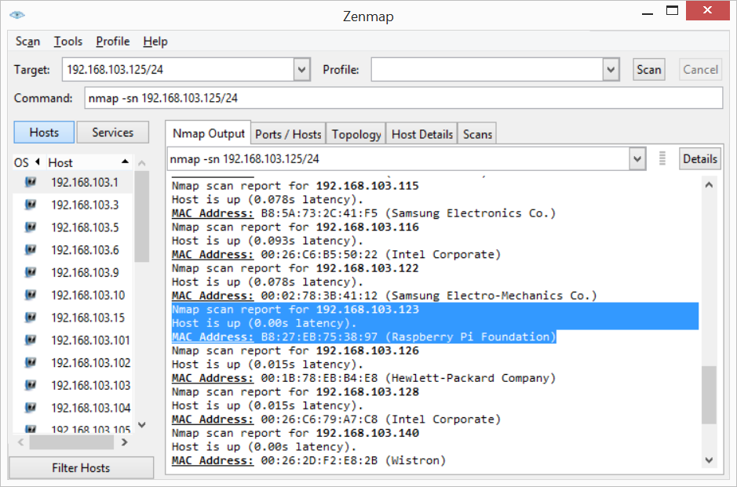
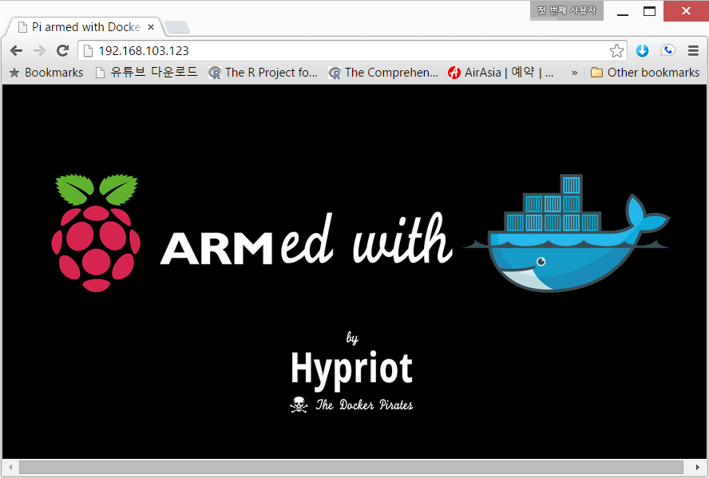

xwMOOC 컴퓨터 개발환경
과학기술 파이썬 툴체인 가상화
학습 목표
- 과학기술 파이썬 툴체인을 가상화한다.
- 도커를 기반으로 과학 컴퓨팅 개발환경을 가상화한다.
1. 도커(Docker) 설치
도커 웹사이트 기준 우분투 환경에 맞춰 도커를 설치한다. 다른 리눅스 OS 설치에 대한 자세한 내용은 도커 설치 웹사이트를 참조한다.
도커를 지원하는 우분투 운영체제는 Ubuntu Trusty 14.04 (LTS), Ubuntu Precise 12.04 (LTS), Ubuntu Saucy 13.10 이 있다. 우분투 버젼이 무엇인지 관계 없이, 64비트이며, 리눅스 커널이 최소 3.1이상이 필요하다. 3.1 버젼 이하를 사용하면 몇가지 버그가 있으며 도커 컨테이너의 기능 일부를 사용할 수 없다.
1.1. 리눅스 커널 업그레이드
uname -r을 통해서 리눅스 버젼을 확인한다.
root@docker-dev:~# uname -r3.13.0-51-generic만약 커널 버젼이 3.1보다 오래된 구 버젼이라면 다음 명령어를 통해서 업그레이드한다.
root@docker-dev:~# sudo apt-get update
root@docker-dev:~# sudo apt-get -y install linux-image-generic-lts-trusty
root@docker-dev:~# sudo reboot
root@docker-dev:~# uname -r3.13.0-53-generic커널 버젼이 3.13.0-51-generic에서 3.13.0-53-generic으로 업그레이드 되었다.
1.2. 도커 설치
도커는 공식적으로 apt-get 우분투 저장소를 통한 방법과 도커 사이트에서 직접 설치하는 방법이 있다. 서로 장단점이 있는데 도커의 경우 관심이 많고 활발하게 진행중인 공개 소프트웨어 프로젝트로 도커 설치 사이트를 참고하여 직접 설치하는 것도 권장한다.
sudo권한을 갖는 사용자로 로그인한다.wget이 설치되었는지 확인한다.
root@docker-dev:~# which wget
/usr/bin/wget- 만약 설치되어 있지 않다면 `sudo apt-get install wget` 명령어로 설치한다.- 가장 최신 도커 팩키지를 설치한다.
root@docker-dev:~# wget -qO- https://get.docker.com/ | shdocker가 설치되었는지 확인한다.
root@docker-dev:~# sudo docker run hello-worldUnable to find image 'hello-world:latest' locally
latest: Pulling from hello-world
a8219747be10: Pull complete
91c95931e552: Already exists
hello-world:latest: The image you are pulling has been verified. Important: imag
e verification is a tech preview feature and should not be relied on to provide
security.
Digest: sha256:aa03e5d0d5553b4c3473e89c8619cf79df368babd18681cf5daeb82aab55838d
Status: Downloaded newer image for hello-world:latest
Hello from Docker.
This message shows that your installation appears to be working correctly.
To generate this message, Docker took the following steps:
1. The Docker client contacted the Docker daemon.
2. The Docker daemon pulled the "hello-world" image from the Docker Hub.
(Assuming it was not already locally available.)
3. The Docker daemon created a new container from that image which runs the
executable that produces the output you are currently reading.
4. The Docker daemon streamed that output to the Docker client, which sent it
to your terminal.
To try something more ambitious, you can run an Ubuntu container with:
$ docker run -it ubuntu bash
For more examples and ideas, visit:
http://docs.docker.com/userguide/이제 도커 설치가 완료되었다. 도커 설치에 대한 자세한 사항은 웹사이트를 참조한다.
2. 도커(Docker) 이미지 생성, 보기, 이름 변경, 삭제
2.1. 도커 이미지 보기
docker images 명령어는 현재 이용가능한 이미지를 화면에 출력한다.
root@docker:~/01.LAMP# docker imagesREPOSITORY TAG IMAGE ID CREATED VIRTUAL SIZE
<none> <none> 0dddfde990c0 19 minutes ago 426.4 MB
ubuntu trusty 6d4946999d4f 7 days ago 188.3 MB
ubuntu latest 6d4946999d4f 7 days ago 188.3 MB
hello-world latest 91c95931e552 9 weeks ago 910 B2.2. 도커 이미지 설치
도커 허브(DockerHub)에 올라간 공용 및 공식 도커 이미지를 검색해서 설치한다. docker search 명령어로 shiny를 입력해서 Shiny 서버를 설치한다. docker search 명령어 인자로 -s 3를 넘기면 별이 3개 이상인 공용 이미지만 출력하고 만약 공식(OFFICIAL) 이미지면 [OK]가 함께 찍여 나온다. 따라서, 선택지가 많은 경우 비공식이 아닌 공식 이미지이며 별이 많은 것을 선택한다.
설치 명령어는 도커 이미지 중에서 가장 별(STARS)이 많은 rocker/shiny를 선택해서 docker pull rocker/shiny 명령어를 실행한다. 로컬 컴퓨터에 shiny 이미지가 없으면 도커 허브(DockerHub)에 접속해서 자동으로 설치한다.
root@docker:~# docker search -s 3 shinyNAME DESCRIPTION STARS OFFICIAL AUTOMATED
rocker/shiny 12 [OK]
quantumobject/docker-shiny Shiny server : use to host and manage shin... 6 [OK]
wch1/r-shiny-server 3 [OK]root@dev:~# docker pull rocker/shinyPulling repository rocker/shiny
f984ee68848b: Download complete
511136ea3c5a: Download complete
d338bb63f151: Download complete
....
16583dad808c: Download complete
ae32e6c699a7: Download complete
Status: Downloaded newer image for rocker/shiny:latestroot@dev:~# docker run --rm -p 3838:3838 rocker/shiny &docker run 명령어로 3838번 포트로 설치한 Shiny 서버를 실행한다.

docker images 명령어를 통해서 설치된 도커 이미지를 확인한다.
root@dev:~/pyr-cloudlayer# docker imagesREPOSITORY TAG IMAGE ID CREATED VIRTUAL SIZE
jekyll/jekyll latest 19216e6f694d 2 days ago 566.1 MB
rocker/shiny latest f984ee68848b 11 weeks ago 1.031 GB
jagregory/pandoc latest be6297221dd3 15 months ago 2.143 GBdocker info 명령어를 통해서 docker 현황을 파악한다.
root@dev:~/pyr-cloudlayer# docker infoContainers: 1
Images: 61
Storage Driver: aufs
Root Dir: /var/lib/docker/aufs
Backing Filesystem: extfs
Dirs: 63
Dirperm1 Supported: false
Execution Driver: native-0.2
Logging Driver: json-file
Kernel Version: 3.13.0-51-generic
Operating System: Ubuntu 14.04.2 LTS
CPUs: 2
Total Memory: 3.908 GiB
WARNING: No swap limit support2.3. 도커 이미지 이름 변경
저장소(REPOSITORY) <none>을 사람이 기억하기 좋은 명칭으로 변경하는 이미지명으로 docker tag 명령어를 사용해서 IMAGE ID나 REPOSITORY 명칭을 넣고 바꾸고자하는 이미지명을 인자로 넣어 변경한다.
root@docker:~# docker tag 0dddfde990c0 statkclee/lamp:v1
root@docker:~# docker tag hello-world:latest statkclee/hello-world:xwmooc
root@docker:~# docker imagesREPOSITORY TAG IMAGE ID CREATED VIRTUAL SIZE
statkclee/lamp v1 0dddfde990c0 19 minutes ago 426.4 MB
ubuntu trusty 6d4946999d4f 7 days ago 188.3 MB
ubuntu latest 6d4946999d4f 7 days ago 188.3 MB
statkclee/hello-world xwmooc 91c95931e552 9 weeks ago 910 B
hello-world latest 91c95931e552 9 weeks ago 910 B2.4. 도커 이미지 삭제
docker rmi 명령어에 IMAGE ID 혹은 REPOSITORY 명칭을 인자로 넣으면 해당 이미지가 삭제된다.
root@docker:~# docker rmi ubuntu:latestUntagged: ubuntu:latestroot@docker:~/01.LAMP# docker imagesREPOSITORY TAG IMAGE ID CREATED VIRTUAL SIZE
statkclee/lamp v1 0dddfde990c0 20 minutes ago 426.4 MB
ubuntu trusty 6d4946999d4f 7 days ago 188.3 MB
statkclee/hello-world xwmooc 91c95931e552 9 weeks ago 910 B
hello-world latest 91c95931e552 9 weeks ago 910 B3. 도커(Docker) 맛보기
3.1. 도커 허브
도커허브(Docker Hub)는 Git과 GitHub 관계와 유사하다. 도커를 로컬에 설치했으면, 이를 외부클라우드 저장소에 보관 및 공유가 필요하다. 이를 위한 장소가 도커허브(Docker Hub)다. 도커허브가 제공하는 기능은 다음과 같다.
- 도커 이미지 호스팅(Docker Image Hosting)
- 사용자 인증
- 빌드 트리거(Build Trigger)나 웹훅(Web Hooks)을 사용해서 이미지 빌드 및 작업흐름 자동화
- 깃허브(GitHub) 혹은 비트버킷(BitBucket)과 통합
3.2. 도커 허브 계정 생성
도커허브에 계정을 생성하는 방법은 일반적인 웹사이트 사용자 등록하는 방식과 명령라인을 이용한 방법이 있다. 일반적인 웹사이트 사용자 등록법은 도커허브(Docker Hub)에서 절차에 따라 진행한다. 여기서는 명령라인 방식을 집중적으로 살펴본다.
root@docker-dev:~# sudo docker loginroot@docker-dev:~# sudo docker login
Username: gildong
Password:
Email: gildong@xwmooc.net
WARNING: login credentials saved in /root/.dockercfg.
Account created. Please use the confirmation link we sent to your e-mail to activate it.사용자명, 비밀번호, 전자우편 주소를 등록하고, 등록한 전자우편에서 도커에서 보낸 전자우편을 확인하면 계정이 활성화된다. 다음부터 sudo docker login 명령어로 로그인해서 도커허브를 사용할 수 있다.
3.3. 도커 허브 “헬로우 월드(Hello World)”
계정을 생성한 다음에 도커 허브에 “헬로우 월드(Hello World)”를 보내보자. 명령어는 sudo docker run ubuntu:14.04 /bin/echo "Hello World"이다.
root@docker-dev:~# sudo docker run ubuntu:14.04 /bin/echo "Hello World"Unable to find image 'ubuntu:14.04' locally
14.04: Pulling from ubuntu
e9e06b06e14c: Already exists
a82efea989f9: Already exists
37bea4ee0c81: Already exists
07f8e8c5e660: Already exists
ubuntu:14.04: The image you are pulling has been verified. Important: image verification is a tech p
review feature and should not be relied on to provide security.
Digest: sha256:125f9479befe1f71562b6ff20fb301523a2633902ded6d50ade4ebcd7637a035
Status: Downloaded newer image for ubuntu:14.04
Hello World기본적으로 ubuntu:14.04 이미지가 로컬에 없기 때문에 도커허브에 접속해서 찾아 풀(Pull) 방식으로 다운로드해서 가져온다. 이제 ubuntu:14.04 이미지가 로컬에 생성되어 있으니 sudo docker run ubuntu:14.04 /bin/echo "Hello World" 명령어를 해부하자.
sudo docker run: 관리자 권한으로 도커를 실행한다.ubuntu:14.04: 우분투 14.04 이미지를 도커로 실행한다./bin/echo "Hello World": 유닉스 echo 명령어로 “Hello World”를 화면에 출력한다.
3.4. 도커 컨테이너 인터랙티브 모드
docker run을 통해서 명령어를 전달하는 방식으로 했지만, 실제 컨테이너 내부로 들어가서 인터랙트브 모드로 컨테이너를 사용하자.
root@docker-dev:~# sudo docker run -t -i ubuntu:14.04 /bin/bash
root@5df339877e7d:/#sudo docker run -t -i ubuntu:14.04 /bin/bash 명령어를 해부하자. 상기 도커 명령어와 비교하여 차이가 나는 것은 -t -i 옵션 플래그가 추가된 것이다.
sudo docker run: 관리자 권한으로 도커를 실행한다.-t -i:-t옵션 플래그는 컨테이너 내부에 터미널을 배정하고,-i는 인터랙티브 연결을 가능하게 한다.ubuntu:14.04: 우분투 14.04 이미지를 도커로 실행한다./bin/echo "Hello World": 유닉스 echo 명령어로 “Hello World”를 화면에
root@5df339877e7d:/# pwd
/
root@5df339877e7d:/# ls
bin dev home lib64 mnt proc run srv tmp var
boot etc lib media opt root sbin sys usr
root@5df339877e7d:/#
root@5df339877e7d:/# exit
exit
root@docker-dev:~#컨테이너 내부에서 pwd 명령어로 현재 작업디렉토리가 / 루트임을 확인할 수 있고, ls 명령어를 통해서 현재 디렉토리 파일과 디렉토리를 목록으로 출력한다. exit 혹은 CTRL+D 키를 눌러 컨테이너를 빠져나온다. 배쉬쉘이 종료되면 컨테이너도 정지된다.
3.5. 유용한 도커 대몬
헬로월드를 본 것이 그다지 의미는 있지 않다. 이제 도커를 데몬화(Daemonization)시켜서 실용적으로 사용할 길을 모색해 보자.
root@docker-dev:~# sudo docker run -d ubuntu:14.04 /bin/sh -c "while true; do echo hello world; sleep 1; done"sudo docker run -d ubuntu:14.04 /bin/sh -c "while true; do echo hello world; sleep 1; done" 명령어를 해부하자.
sudo docker run: 관리자 권한으로 도커를 실행한다.-d:-d옵션 플래그은 컨테이너를 데몬으로 실행한다. 즉, 백그라운드 작업으로 실행한다.ubuntu:14.04: 우분투 14.04 이미지를 도커로 실행한다./bin/sh -c "while true; do echo hello world; sleep 1; done: 간단한 유닉스 쉘스크립트로 유닉스 echo 명령어로 “Hello World”를 화면에 무한히 출력한다.
6cd5c7730cd6629f67f540912f0b0018fd8bbdce3c2703bdd5b4634627d6b555실행결과 6cd5c7730... 문자열이 출력되는데 데몬으로 백그라운드 실행되는 컨테이너 ID가 된다. 컨테이너가 데몬으로 정상적으로 떠서 실행되는지 확인하는 명령어는 docker ps다.
root@docker-dev:~# sudo docker psdocker ps 명령 실행결과 ’컨테이너 ID’가 6cd5c7730...으로 동일하고, 이미지는 우분투 ubuntu:14.04이고, 명령어는 "/bin/sh -c 'while t이 실행되고, 생성시점과 상태 정보를 확인한다.
CONTAINER ID IMAGE COMMAND CREATED STATUS
6cd5c7730cd6 ubuntu:14.04 "/bin/sh -c 'while t 6 minutes ago Up 6 minutes실제 ‘컨테이너 ID’ 6cd5c7730...에서 실행되고 있는 것을 확인하려면 docker logs 명령어와 인자값으로 ’컨테이너 ID’를 전송한다. 그리고 리다이렉션을 사용해서 첫 5 행 출력결과만 가져온다.
~ {.input}docker-jupyter.png root@docker-dev:~# docker logs 6cd5c | head -5 ~
hello world
hello world
hello world
hello world
hello world
time="2015-05-28T01:20:11-05:00" level=fatal msg="write /dev/stdout: broken pipe"도커 컨테이너를 백그라운드 데몬으로 실행했으니 이제는 이를 중지하자. 중지하는 명령어는 docker stop이다. 플래그 옵션으로 6cd5c을 넣어주면 해당 컨테이너 데몬이 중지한다.
root@docker-dev:~# docker stop 6cd5c6cd5cdocker ps 명령어를 통해서 실제로 데몬 컨테이너가 중지되었는지 확인한다.
root@docker-dev:~# docker psCONTAINER ID IMAGE COMMAND CREATED STATUS3.6. 도커 DNS 서버 환경설정
우분투 운영체제는 일반적으로 /etc/resolv.conf 파일에 도메인네임서버(Domain Name Server, DNS)로 127.0.0.1를 사용한다. 네트워크 관리자(NetworkManager)로 dnsmasq 명령어로 실제 DNS를 /etc/resolv.conf 파일에 nameserver 127.0.0.1로 설정한다.
하지만 이런 환경설정으로 도커를 실행하게 되면 아래 경고 메시지가 뜬다. 이유는 도커 컨테이너가 로컬 DNS 네임서버를 사용할 수 없기 때문이다.
WARNING: Local (127.0.0.1) DNS resolver found in resolv.conf and containers
can't use it. Using default external servers : [8.8.8.8 8.8.4.4]이 문제를 회피하기 위해서, 도커 컨테이너가 사용하는 DNS 서버를 지정하거나 네트워크 관리자(Network Manager)에 dnsmasq를 비활성화한다. 하지만 dnsmasq를 비활성화하는 것이 DNS 식별에 시간이 걸려 특정 네트워크에서 속도가 느려질 수 있다.
도커에서 DNS 서버를 지정하는 방법
sudo권한을 갖는 사용자로 로그인한다.nano텍스트 편집기로/etc/default/docker파일을 열어 편집한다.
root@docker-dev:~# sudo nano /etc/default/docker- 도커 환경설정을 추가한다.
8.8.8.8을169.53.232.6IP주소로 실제 사용할 주소로 변경한다.#DOCKER_OPTS="--dns 8.8.8.8 --dns 169.53.232.6"
# Docker Upstart and SysVinit configuration file
# Customize location of Docker binary (especially for development testing).
#DOCKER="/usr/local/bin/docker"
# Use DOCKER_OPTS to modify the daemon startup options.
#DOCKER_OPTS="--dns 8.8.8.8 --dns 169.53.232.6"
# If you need Docker to use an HTTP proxy, it can also be specified here.
#export http_proxy="http://127.0.0.1:3128/"
# This is also a handy place to tweak where Docker's temporary files go.
#export TMPDIR="/mnt/bigdrive/docker-tmp"- 저장하고
nano편집기를 빠져나온다. - 도커 대몬을 재실행한다.
root@docker-dev:~# sudo restart dockerdocker start/running, process 7909도커 최신 버젼 업그레이드
가장 최신 버젼 도커를 설치하려면 wget 명령어에 -N 옵션 플레그를 사용한다.
root@docker-dev:~# wget -N https://get.docker.com/ | sh3.7. 웹서비스 도커 컨테이너
가장 많이 사용하는 웹응용프로그램을 파이썬 플라스(Flask) 웹플레임워크를 사용하여 응용프로그램을 개발한다. 먼저 docker run을 사용해서 파이썬 플라스크 웹플레임워크 이미지를 설치한다.
root@docker-dev:~# sudo docker run -d -P training/webapp python app.pysudo docker run -d -P training/webapp python app.py명령어를 해석한다.
sudo docker run: 관리자 권한으로 도커를 실행한다.-d:-d옵션 플래그는 컨테이너를 데몬으로 실행한다. 즉, 백그라운드 작업으로 실행한다.-P:-P옵션 플래그는 컨테이너 내부 네트워크 포트를 호스트/컴퓨터 포트에 매핑한다.training/webapp: 파이썬 플라스크 웹프레임워크 이미지를 실행한다.python app.py: 파이썬 플라스크 웹응용프로그램을 실행한다.
a663f873627cd4ed8f4bd1c288d56ea975bdc51298df0afcc93365620cfcdb00sudo docker ps -l을 실행하면 주의 깊게 살펴볼 것이 PORTS에 0.0.0.0:32780->5000/tcp으로 포트를 32780으로 매핑한다.
root@docker-dev:~# sudo docker ps -lCONTAINER ID IMAGE COMMAND CREATED STATUS PORTS NAMES
a663f873627c training/webapp:latest "python app.py" 8 seconds ago Up 8 seconds 0.0.0.0:32780->5000/tcp determined_lovelaceroot@docker-dev:~# ifconfig eth01eth1 Link encap:Ethernet HWaddr 06:28:dd:28:1e:e9
inet addr:169.53.232.6 Bcast:169.53.232.15 Mask:255.255.255.240
inet6 addr: fe80::428:ddff:fe28:1ee9/64 Scope:Link
UP BROADCAST RUNNING MULTICAST MTU:1500 Metric:1
RX packets:394567 errors:0 dropped:0 overruns:0 frame:0
TX packets:75168 errors:0 dropped:0 overruns:0 carrier:0
collisions:0 txqueuelen:1000
RX bytes:467528533 (467.5 MB) TX bytes:13397258 (13.3 MB)IP주소가 169.53.232.6이고 포트번호가 32780에 매핑이 되어 웹브라우져에서 http://169.53.232.6:32780/으로 입력하면 도커 컨테이너에 정상적으로 파이썬 플라스크 웹응용프로그램이 실행되는 것을 확인할 수 있다.

4. 아나콘다 과학 컴퓨팅 툴체인
4.1. 아나콘다 설치
아나콘다(Anaconda)는 파이썬 언어를 기반으로 과학 컴퓨팅을 지원하는 통합개발환경(IDE)로 개발시간을 획기적으로 단축시킬 수 있다.
- 아나콘다 다운로드 웹페이지에서 설치 컴퓨터 사양에 맞는 아나콘다를 다운로드 한다.
- 리눅스 우분투 64 Bit, 파이썬 3.4를 다운로드했다. 웹에서 직적 다운로드하거나,
wget명령어를 사용해서 링크를 터미널에 붙여넣고 다운로드 받아도 된다.
- 리눅스 우분투 64 Bit, 파이썬 3.4를 다운로드했다. 웹에서 직적 다운로드하거나,
bash명령어로 쉘스크립트를 실행하면 자동으로 설치된다.- 루트 권한이 필요없으며 사용자 홈디렉토리 밑에
~/anaconda가 기본 디렉토리가 된다. - 삭제를 원한다면
rm -rf ~/anaconda명령어를 사용한다.
- 루트 권한이 필요없으며 사용자 홈디렉토리 밑에
$ wget https://3230d63b5fc54e62148e-c95ac804525aac4b6dba79b00b39d1d3.ssl.cf1.rackcdn.com/Anaconda3-2.3.0-Linux-x86_64.sh
$ bash Anaconda3-2.3.0-Linux-x86_64.sh 참고: Installing Anaconda python on ubuntu
4.2. 과학 컴퓨팅 환경 도커 가상화
Jupyter 도커 스택에는 R, 파이썬, 스파크, 파이스파크 등 다양한 노트북을 지원해서 별도 환경설정없이 바로 데이터 기반 분석, 모의실험, 소프트웨어 개발을 시작할 수 있게 한다. Jupyter Notebook Scientific Python Stack을 docker pull 명령어를 통해서 다운로드 받으면 과학 컴퓨팅을 위한 파이썬 툴체인이 설정되고, 웹브라우져를 주피터 노트북을 통해 통합 개발환경을 구축한다.
GRANT_SUDO=yes 옵션은 루트 권한을 부여해서 컨테이너에 자유로이 팩키지를 설치하게 하고, 8888로 포워팅하는 -p 8888:8888 옵션을 연다.
$ docker pull jupyter/scipy-notebook
$ docker run -d -e GRANT_SUDO=yes -p 8888:8888 jupyter/scipy-notebook웹브라우져 주소창에 localhost:8888을 입력하면 주피터 노트북이 실행된다.

4.3. PyMC 베이지안 분석환경 설치
jupyter/scipy-notebook 이미지를 가져왔으면 docker run 명령어를 통해서 컨테이너를 여러개 띄워 환경에 구애받지 않고 자유로이 생성하고 삭제가능하다. PyMC는 conda install pymc 명령어를 통해 설치한다. 여기서 conda는 아나콘다 기본 팩키지 관리자다.
$ docker run -it jupyter/scipy-notebook /bin/bash
$ apt-get install python-qt4
$ conda install pymc
$ apt-get install graphviz
$ source activate python2
$ conda install pydot4.4. 베이지안 R과 Jags
4.4.1. JAGS
JAGS는 Just Another Gibbs Sampler의 약어로 마코프 체인 몬테 카를로(Markov Chain Monte Carlo, MCMC) 모의실험을 사용해서 계층적 베이지안 모형 분석하는 프로그램이다.
- 쉘 환경에서 별도 팩키지로
jags를 설치한다.
$ sudo apt-cache search jags
$ sudo apt-get install jags- R 환경에서
R2jags팩키지를 설치한다.
> version
_
platform x86_64-pc-linux-gnu
arch x86_64
os linux-gnu
system x86_64, linux-gnu
status
major 3
minor 2.0
year 2015
month 04
day 16
svn rev 68180
language R
version.string R version 3.2.0 (2015-04-16)
nickname Full of Ingredients
> install.packages("rjags") - 베이지안 자료분석을 위한 프로그램과 데이터를 다운로드 받는다.
$ wget https://sites.google.com/site/doingbayesiandataanalysis/software-installation/DBDA2Eprograms.zip
$ unzip DBDA2Eprograms.zip 4.4.2. 베이지안 로지스틱 회귀분석
Kruschke 스타일 베이지안 모형 시각화 템플릿으로 리브레 오피스 Draw를 사용한다. 만약 LaTeX으로 동일한 작업을 하고자 한다면 Tinu Schneider의 GitHub 저장소를 참고한다.
5. 라즈베리 파이 도커
x86 아키텍쳐를 가진 중앙처리장치에 비해서 ARM은 저전력 설계로 인해서 사물인터넷 IoT 제품에 좋은 궁합을 보여주고 있다. 하지만, 도커는 x86 아키텍쳐 기반으로 돌아가기 때문에 ARM 위에 도커를 올리기 위해서는 별도 작업이 필요한데 Hypriot에서 ARM 기반 도커를 라즈베리 파이 하드웨어 위에서 돌릴 수 있도록 만들었다.
5.1. 라즈베리 파이 도커 설치
도커는 복잡한 응용프로그램 팩키징, 배포, 설치, 실행을 단순화해서 최근 몇년동안 가장 인기있는 소프트웨가 되었다. 그 면에는 많이 사용되는 워드프레스 같은 블로깅 플랫폼도 많은 소프트웨어가 필요하고 환경에 따라 설정이 되는 등 폭잡한 과정이 필요하기 때문에 블로그 본연에 집중하기 보다 더 많은 시간은 다른 곳에 보내는 문제점이 심화되고 있다.
설치 준비물
1.Nmap - 컴퓨터와 서버를 찾을 주로 사용. 라즈베리 파이 접속 IP 식별을 위해 사용되는 소프트웨어 1. 7-Zip - 다운로드 받은 압축을 풀 때 사용. 꼭 7-Zip일 필요는 없고 압축을 풀 수만 있으면 된다. 1. Win32 Disk Imager - 이미지를 마이크로SD 카드에 쓸 때 사용한다. 1. Putty - 라즈베리 파이에 ssh 연결할 때 사용한다.
윈도우 환경에서 라즈베리 파이 도커를 사용하려면 최소 4GB 마이크로 SD카드가 필요하다.
- 라즈베리 파이 도커 이미지를 다운로드한다.
- 다운로드한 압축파일을 푼다. 대략
hypriot-rpi-20150909-070022.img파일처럼 보인다. - Win32 Disk Imager 프로그램으로 이미지를 준비한 마이크로 SD 카드에 넣는다.
- Hypriot 라즈베리 파이 도커 이미지가 설치된 마이크로 SD카드를 라즈베리 파이에 장착하여 부팅한다.
- Nmap 프로그램을 실행해서 라즈베리 파이 IP주소를 알아낸다.
- 본인 컴퓨터 IP주소를 넣고 뒤에
/24을 추가한다. 예를 들어,192.168.103.125/24.

다양한 플랫폼에서 라즈베리 파이에 도커를 설치하는 것은 설치 안내를 참고한다.
$ docker run -d -p 80:80 hypriot/rpi-busybox-httpdUnable to find image 'hypriot/rpi-busybox-httpd:latest' locally
latest: Pulling from hypriot/rpi-busybox-httpd
9cc8764d12a6: Pull complete
bd3d8cb843a9: Pull complete
2a8d86d0efa6: Pull complete
2133eee1fabe: Already exists
Digest: sha256:6456379f0754b0208662b9f5779ffe0d873b50d176b28e5961256569b4fd3fc2
Status: Downloaded newer image for hypriot/rpi-busybox-httpd:latest
d4ce57bbf911c974f1544aef9d9683335fb0a6c383f269806596c7cc363011ed
5.2. 과학 컴퓨팅(Scientific Computing) 개발 툴체인
Dockerized Notebook + SciPy Stack를 도커허브에서 가져온다. docker pull ipython/scipyserver 명령어를 사용하고 나서 가져오기가 모두 끝나면, docker run -d -p 443:8888 ipython/scipyserver 명령어를 실행해서 컨테이너를 띄운다. 웹브라우져 주소창에 https://localhost/를 입력하여 후속작업을 실행한다.
$ docker pull ipython/scipyserver
$ docker run -d -p 443:8888 ipython/scipyserver5.2. 과학 컴퓨팅(Scientific Computing) 개발 툴체인
$ wget http://downloads.hypriot.com/docker-hypriot_1.8.2-1_armhf.deb
$ dpkg -i docker-hypriot_1.8.2-1_armhf.deb